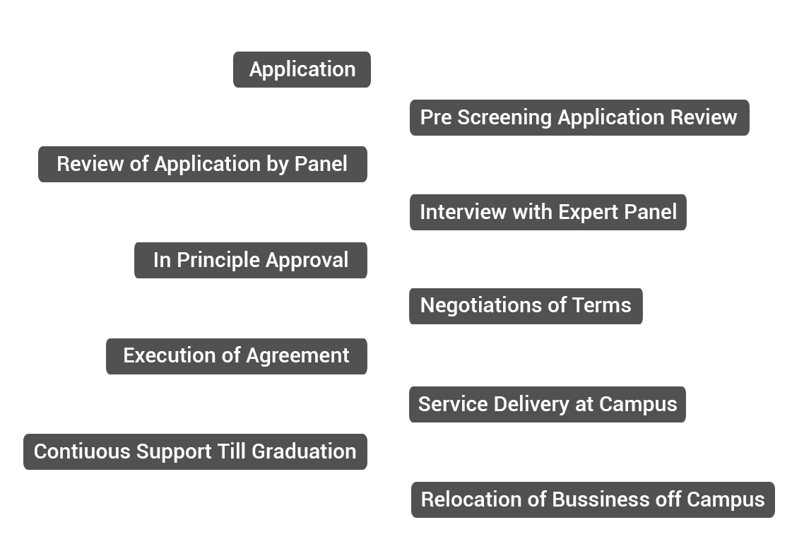

About VIT-TBI
Technology Business incubator (TBI) is an entity, which helps technology start-up businesses with, all the necessary resources / support that the start-up needs to evolve and grow as a mature business. Typically, TBIs provide incubatees, the start-up businesses supported by incubator, with necessary infrastructure support, technology/ prototype development support, research assistance, help in getting funding, business consulting assistance and do whatever is necessary to make the start-up a success.
VIT-TBI is situated inside the University of Vellore Institute of Technology. Hence, VIT-TBI leverages all the resources that are available within the campus such as access to laboratory, workshops, development and testing centers, computing resources, internet access and above all the human resources. In addition to these resources, VIT-TBI also has a network of eminent professionals, academicians, bankers, venture capitalists and businessmen, who can extend support to these ventures.
Thrust Areas
VIT-TBI has identified the following technology areas as thrust sectors, taking in to consideration the market demands and industries situated in and around the industrial cluster of Katpadi - Ranipet – Vellore – Chennai - Bangalore Region.
- Bio- Technology based industries
- Environmental friendly solutions and products for Leather industries
- Automotive / Mechanical Engineering sector related products and services
- Information Technology Products and Solutions
Selection Process
A panel of eminent technocrats will process the applicants, interview the promoters and select the ventures for incubation after carefully evaluating the business idea, market availability, potential value of the technology, growth prospects, innovative content and promoter team. The panel will consist of experienced and qualified professionals from specific industry, leading bankers, seasoned venture capitalists and academicians of repute.

Dr. G. Viswanathan
Chancellor, VIT University & Chairman, VIT-TBI, Vellore.
Mr. G.V.Selvam
Vice President, VIT University & Vice Chairman-VITTBI, Vellore.
Dr. V. Raju
Vice-Chancellor, VIT University & Treasurer, VIT-TBI.
Mr. T. S. Thiagarajan, Registrar
VIT University & Secretary, VIT-TBI, Vellore.
Prof. S.K.Sekar
Dean, School of Mechanical and Building Sciences, VIT University.
Mr. H.K.Mittal
Advisor & Head (NSTEDB), Department of Science & Technology, Govt. of India, New Delhi.
Industries Commissioner and Director of Industries & Commerce
Govt. of Tamil Nadu, Chennai.
Dr. P.K.B.Menon
Former Advisor & Head (NSTEDB), Department of Science & Technology, Govt. of India, New Delhi.
Mr. B. Nagarjuna
Zonal Manager , Indian Bank, Zonal Office, Vellore.
Mr. R.M.P. Jawahar
Executive Director, TREC Science & Technology Entrepreneurship Park, TEC Trichy.
Mr.T.S.Udayasankar
Technical Director, Samco Metals & Alloys, Kaniaymbadi, Velllore.
Mr. K.Ponnuswamy
Managing Director, INDIRA Industries, Ranipet.